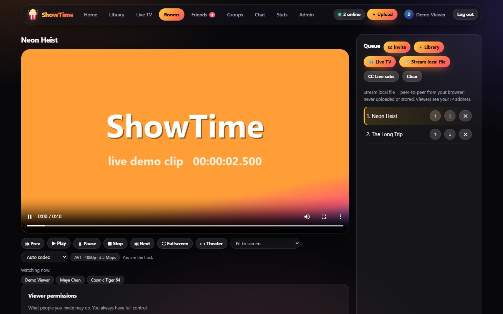
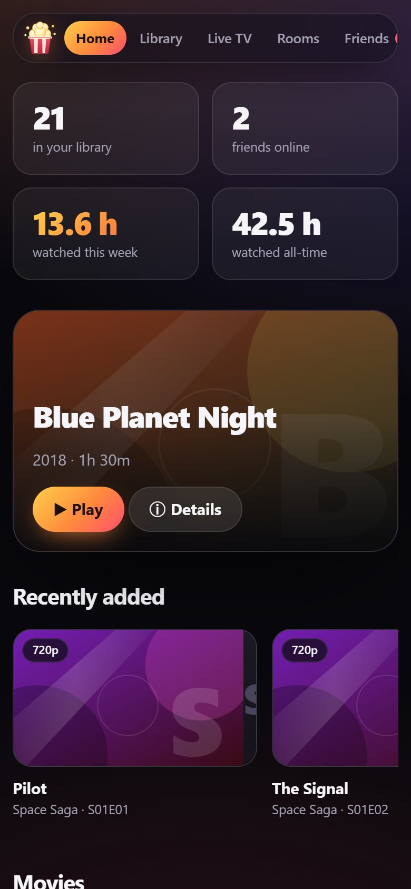

🍿
Synced watch parties
Play, pause, seek, queue and skip stay in lockstep for everyone. Hosts decide who may control what, and can stream a file straight from their own computer over WebRTC — nothing is uploaded.
Open source · Self-hosted · v{{VERSION}}
ShowTime is a lightweight watch-party server you run yourself. Sync movies, shows and live TV with friends in real time, with an encrypted library, friends-only privacy, smart AV1/VP9 encoding and end-to-end encrypted chat.


Features
Built for small groups and local networks first, with the privacy and security you'd expect before putting it on the internet.
Play, pause, seek, queue and skip stay in lockstep for everyone. Hosts decide who may control what, and can stream a file straight from their own computer over WebRTC — nothing is uploaded.
No user directory, no search. People connect by swapping private friend codes off-platform. Strangers in a shared room only ever see anonymous aliases. Online status is friends-only.
Uploads, thumbnails, subtitles and profile pictures are stored with chunked AES-256-GCM and a per-file key, so seeking still works. Local library folders are read-only and never modified.
A quick scan trial-encodes your file on your machine, then produces only the versions worth having. Every viewer's player picks the best one for its device — and can switch live without losing its place.
A mIRC-style chat where the server only sees ciphertext. Keys come from a passphrase, nicknames live inside the encrypted payload, nothing touches disk, and everything is wiped every 48 hours.
Browse thousands of free, publicly available channels from the community iptv-org index. Streams play through a hardened proxy with health checks, frozen-feed detection and automatic recovery.
Embedded and sidecar tracks are found automatically and stored as encrypted WebVTT. Upload your own, or share subtitles live with your room, peer-to-peer.
Track watch time, recently watched and everything you've seen. Earn 30 bronze-to-platinum badges. Your activity is private unless you choose to share it with friends.
Screenshots
These are captured from the live demo, which runs the real front-end in your browser.
How it works
Clone the repo, npm install, npm start. The first account you register becomes the admin.
Upload files (encrypted) or point ShowTime at a folder. Swap friend codes, make a group, share a title.
Invite people, press play, and everyone watches in sync. Chat is one tab away — and it forgets everything on schedule.
Security
ShowTime assumes it will be exposed to people you don't know, so the defaults are strict. Read the full security policy.
innerHTML with data.Install
Requires Node.js 22.13+ and FFmpeg on your PATH.
# get it
git clone {{REPO}}.git
cd ShowTime
npm install
cp .env.example .env # optional: SMTP, library folders, TLS
npm start # http://127.0.0.1:8080 - first signup becomes adminServing friends over the internet? Put it behind HTTPS (Tailscale Funnel, Cloudflare Tunnel or Caddy) — see the full install guide for Windows, macOS and Linux, reverse proxies and running it as a service.
FAQ
Yes. It is free, open-source software under the MIT license. You host it yourself on your own computer or server.
No. You bring your own media. The Live TV page imports the community iptv-org index of publicly available channels, and you are responsible for what you watch and share. ShowTime has no public links and includes a compliance hook for future copyright tooling.
Yes. Expose it over HTTPS with a tunnel (Tailscale Funnel, Cloudflare Tunnel) or a reverse proxy, then send invite links. Signup is invite-only by default.
Messages are encrypted in your browser with AES-256-GCM using a key derived from a channel passphrase. The server only holds ciphertext in memory, never on disk, and destroys everything every 48 hours. Anyone who knows a channel's passphrase can read it, so share it only with people you trust.
AV1, VP9 and H.264 are supported, with a quick scan that picks the best version and per-viewer switching. AV2 isn't supported by FFmpeg or any browser yet, so it is a ready-made slot that activates when they catch up.
Current Chrome, Edge, Firefox and Safari. Streaming a local file to a room (peer-to-peer) needs Chrome, Edge or Firefox on the host's side.
v{{VERSION}} is the first public release and is considered beta. It is covered by an automated test suite, but expect rough edges. Issues and pull requests are welcome.
Open the demo, no install and no sign-up — or grab the code and host it yourself.